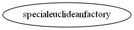

Master index
Index for manopt\manifolds\specialeuclidean
Dependency Graph for manopt\manifolds\specialeuclidean

Generated on Thu 02-Jul-2015 18:56:10 by
m2html
© 2005
 Master index
Master index Master index
Master index